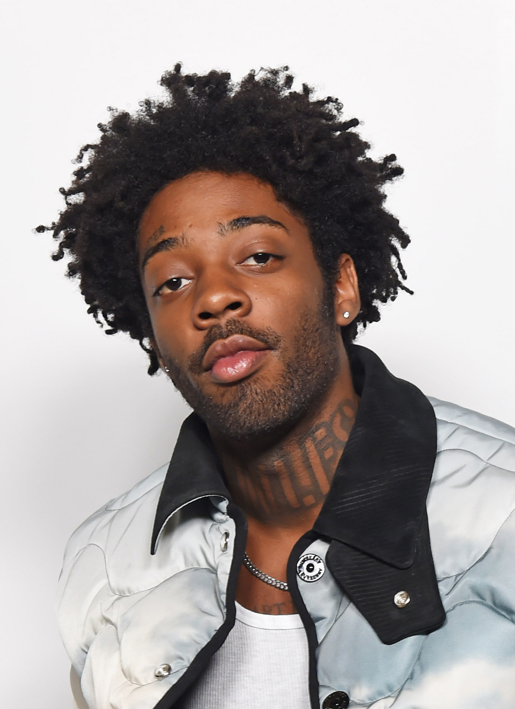

My favorite R&B Artist
Brent Faiyaz

Brent Faiyaz is an independent singer, songwriter, rapper, and record producer. He's mainly an R&B and soul artist, much like SZA.
A lot of teenagers and young adults know of him for having songs trending on Tiktok, which is how I discovered him.
His favorite album of mine would be Wasteland which released in 2022.
Some of my Favorite Songs by Brent Faiyaz
- All Mine
- JACKIE BROWN
- Poison
- CLOUDED
- FYTB